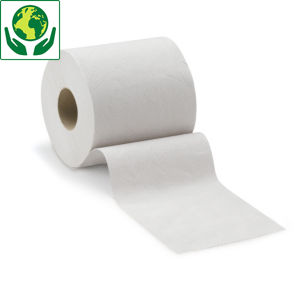

Mjukt toalettpapper
Mycket mjukt toalettpapper som lätt bryts ner vilket gör att det perfekt för användning till portabla toaletter. Eftersom det lätt bryts ner är det skonsamt att använda även till vanliga toaletter där det finns risk för tilltäppning. Skonsamt för avfallstanken. 4 rullar med 2-lagrers papper.